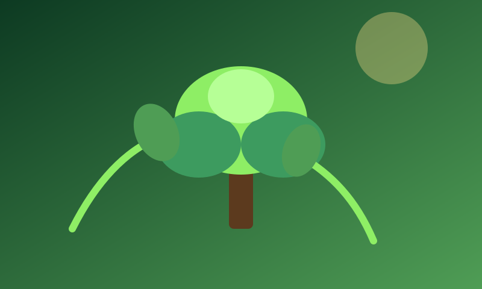

Notícias ambientais de fontes oficiais e artigos educativos sobre resíduos, água, consumo consciente e natureza.
Informação confiável para transformar hábitos
Confira notícias ambientais publicadas por órgãos oficiais e guias temáticos do projeto. Use o campo de busca por palavra-chave ou o seletor de categorias abaixo para filtrar os assuntos de seu interesse.
Exibindo todos os conteúdos.

Natureza e Clima
· Ministério do Meio Ambiente
Brasil apresenta estratégias para enfrentar a desertificação
O Ministério do Meio Ambiente divulgou ações e perspectivas para reduzir a degradação do solo e fortalecer a recuperação da vegetação nativa.
Como o planejamento de compras reduz o desperdício alimentar
Cerca de um terço dos alimentos produzidos no mundo é desperdiçado. Planejar cardápios semanais e aproveitar integralmente os vegetais reduz o lixo orgânico e economiza recursos.
Logística reversa: onde entregar pilhas, lâmpadas e eletrônicos
Entenda como funciona a responsabilidade compartilhada pelo ciclo de vida dos produtos e por que baterias e equipamentos nunca devem ir para o lixo comum.
Selo Procel e consumo inteligente de energia nas residências
Escolher eletrodomésticos com classificação A de eficiência energética e aproveitar a ventilação e iluminação naturais diminui a pegada de carbono da residência.
Captação de água da chuva e proteção de nascentes urbanas
Soluções baseadas na natureza, como jardins de chuva, calçadas permeáveis e armazenamento de água pluvial, ajudam a prevenir enchentes e economizar água tratada.